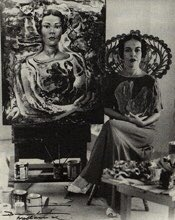
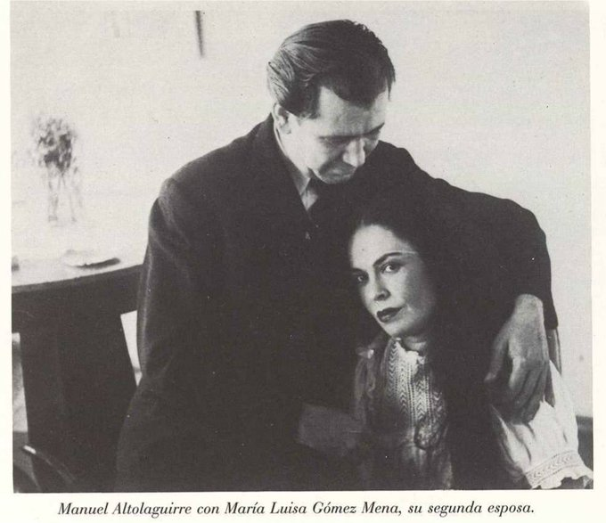

Los Hilos de Monik
María Luisa Gómez Mena
Publicado el 12 de julio de 2020 - 17 tweets - Hilo original en Twitter
1
La historia de Cuba ha tenido familias con personalidades y vidas bien interesantes. Una de ellas: los Gómez Mena. En especial dos mujeres con el mismo nombre: María Luisa.
Sip, fueron dos. El imaginario popular las ha mezclado, pero en realidad eran tía y sobrina.
2
Hoy hablaré sobre la sobrina: María Luisa Aurelia Florencia Gómez Mena Vivanco, o simplemente MLGM.
Una mujer interesantísima, mecenas de arte y casi que artista ella misma. Y responsable en gran medida de la visibilización del arte cubano.
Ella NO fue la condesa, aclaro.
3
Nacida en 1907, a los 19 años se casó con un militar español y vivió en España por 10 años. Tras separarse, regresó a Cuba y comenzó una prolífica labor de mecenazgo.
Apoyó a intelectuales españoles que huían de la guerra, pero sobre todo, a los pintores modernistas cubanos.
4
A finales de los 30, MLGM se codeaba con mujeres intelectuales: Lydia Cabrera, María Zambrano y Concha Méndez.
A Mendez -española- la ayudó a establecerse en La Habana junto a su esposo, el poeta de la Generación del 27 Manuel Altolaguirre... quien luego fue su pareja.
5
MLGM también era “punto fijo” en las tertulias que Carlos Enríquez hacía en el Hurón Azul. Su retrato más famoso se lo hizo él y lo pueden encontrar en @bellasartescuba.
(Cada obra que pongo en este hilo tiene título y autor incluidos en la opción Alt, por si les interesa)
6
Tuve un profesor que decía (esto es puro chisme) que MLGM tuvo muchos amantes pintores, y que ella pedía un retrato a cada amante.
Él también decía que ella apoyó a dos artistas con quienes no tuvo nada: Wifredo Lam (porque era negro) y Amelia Pelaez (porque era gay)
7
En 1942 fundó junto a Mario Carreño (su esposo entre 1941-1944) y José Gómez Sicre la Galería del Prado (Paseo del Prado #72), considerada la galería que internacionalizó a los pintores modernos cubanos, tras organizar la expo “Modern Cuban Painters” para el @MuseumModernArt.
8
El texto que acompañó la expo, titulada "Pintura cubana de hoy", es un documento importantísimo y sin precedentes, que legitimizó los términos "arte cubano" y "escuela de La Habana".
La galería sólo tenía una expo colectiva, de carácter permanente, que renovaban según vendían
9
Algunos textos dicen que sus simpatías y apoyo a los republicanos españoles le valieron que le denegaran el visado a los EE.UU., por lo que pasó a residir en México.
Su relación con Carreño fue en declive, al parecer por diferencias políticas y por culpa de Siqueiros.
10
Carreño estableció íntimas relaciones con el mexicano David Alfaro Siqueiros, quien según Cundo Bermudez, vino a La Habana esperando que a través de los miembros comunistas del gabinete de Batista, se le comisionaran murales. Pero no lo logró y se endeudó con el Hotel Sevilla
11
Carreño y Sicre lo acogieron entonces, llevándolo a casa de MLGM. Siqueiros, a su vez, les agradeció introduciéndoles a la técnica del duco.
A MLGM no le cayó bien Siqueiros, y en sus cartas decía que él y otros pusieron a Carreño en su contra.
12
Al mudarse a México, finalmente separada de Carreño, se une a Altolaguirre. En 1945 fundó la editorial Isla, para que él la dirigiera. El proyecto fue un fracaso económico y él aún no dejaba a su esposa.
Se dejan, ella regresa a La Habana y dos años despues se reencuentran.
13
Pero la influencia de MLGM no se limitó a Cuba y México.
En 1948 apoyó en Venezuela, junto a Alejo Carpentier y José Gómez Sicre, la creación de un Taller Libre de Arte, que renovó artísticamente de la Escuela de Artes Plásticas de Caracas.
14
Más adelante, MLGM expande su campo de acción al cine, fundando en 1950 Producciones Isla. Manuel era el guionista.
En 1952, su filme "Subida al cielo", dirigida por Luis Buñuel, se exhibió en Cannes y obtuvo en París el premio de la crítica a Mejor Película de Vanguardia.
15
Su muerte fue trágica: en 1959, exhibió fuera de concurso la primera versión de "El cantar de los cantares" en el Festival de San Sebastián.
De regreso a Madrid, el carro donde viajaban ella y Manuel Altaguirre, se volcó.
16
Con 52 años, fue sepultada en un cementerio a las afueras de Madrid, muy discretamente.
Según la ley española, ella nunca se había divorciado de su esposo, quien en esa época era un militar franquista de alto nivel. Manuel era considerado un "rojo".
17
A pesar de que existe escasa bibliografía, MLGM logró mantenerse en la memoria histórica de los cubanos.
Sin ella, los pintores modernos de la primera mitad del siglo XX no habrían tenido las mismas oportunidades.
Sin ella, la historia del arte cubano hoy sería otra.